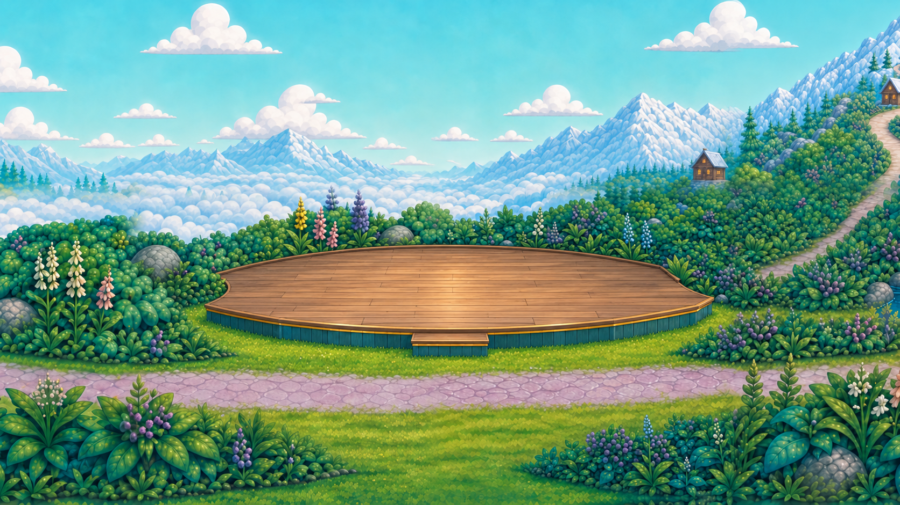
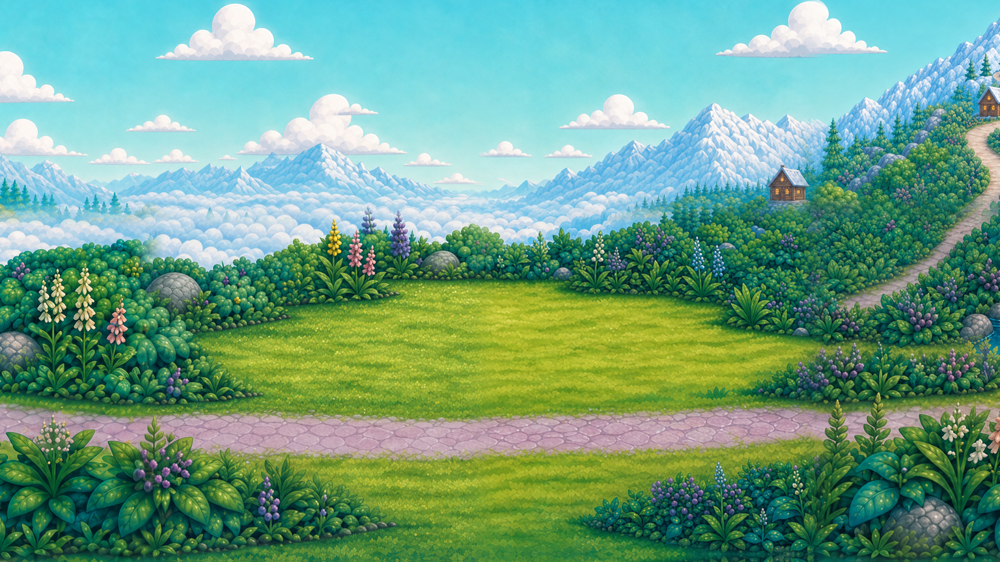

BATTLE OF THE BANDS / TERRAIN FIT / R4 REVIEW
Build into the clearing.
The previous oval spread across the stone path and shrub borders. The replacement keeps a broad performance surface but uses a shallow, asymmetric footprint shaped by the actual meadow.



Four construction constraints
- Follow the border. Bend the rear edge along the existing shrubs and cut the left side inward around the shrub lobe.
- Respect the route. Angle the right side away from the uphill junction; keep the stone cross-path clear from edge to edge.
- Keep it low. Use a shallow blue-green fascia, thin gold edge and a short step ending in the grass. No deep podium wall or broad staircase.
- Keep usable space. Stagger the band in two rows on the long deck. Every foot, tail, stand and cake pedestal must rest on wood.
The band in its setting

Shots 06, 08 and 10 reuse compatible earlier close-ups. Small trim/fascia differences in shot 04, shot 11 and the contact study remain flagged for continuity review; see the geometry brief.
Drum-interface camera
The interface now uses a close camera crop of the complete new environment. It no longer enlarges an independent oval platform over the lagoon. Existing drum hit regions and timing are unchanged; this remains an interface fixture with a static Roshan pose.

Try the interface · Geometry / Codex brief · Source and generation evidence · Full handoff
Review candidate, not owner-accepted art or production integration. All original source art and superseded frames are preserved. Full-frame cinematic and device/child/owner gates remain open.